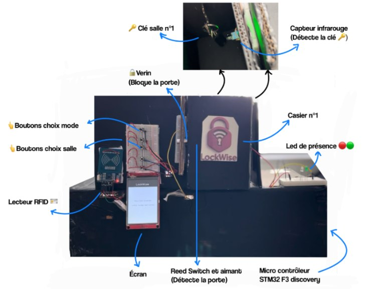

// Système embarqué
LockWise - Casier à clés sécurisé par RFID
Système embarqué de gestion sécurisée des clés par badge RFID.
Contexte
Dans un bâtiment ancien, remplacer toutes les serrures est coûteux. LockWise centralise les clés physiques dans un casier connecté, accessible uniquement par badge RFID, sans modifier l'infrastructure existante.
Mon périmètre
- Driver RFID bas niveau (MFRC522 via SPI)
- Capteurs infrarouges + Reed switch (présence clé, fermeture porte)
- Pilotage des actionneurs - 3 serrures via pont en H 12V
- Machine à états finis (FSM) embarquée du scénario complet
- Design et fabrication du boîtier
Stack technique
STM32F303
C / HAL
MFRC522
SPI · UART
Raspberry Pi